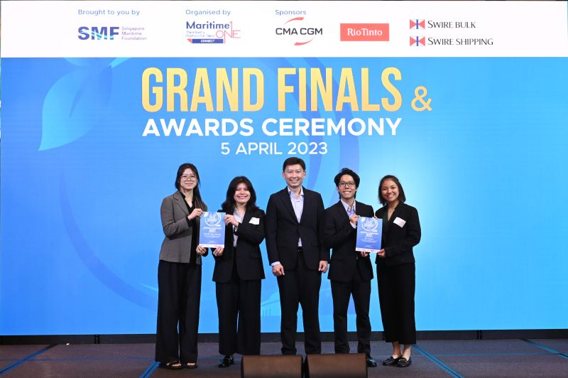

Kango Lee
Singapore Management University
Information Systems
Smart City Management and Technology
Sustainable Technologies
Reach out to me!
Email | LinkedIn | Github
Projects
School Projects
- Airline Data Analysis (Big Data Architecture)
- Using Amazon Web Services (AWS), we built a data engineering and analytics pipeline from scratch to analyze and predict delays in flights due to weather and major events.
- In our AWS pipeline, we have used AWS S3, Glue, RedShift, SageMaker, and QuickSight.
-
Impact of COVID-19 on Anti-immigration Sentiment (Computational
Social Science)
- In this project, we explored the impact of COVID-19 on anti-immigration sentiment on social media.
- Leveraging Python, we used tools like SNScrape, PRAW, and PSAW for extracting social media posts on Twitter and Reddit.
- We also used libraries and models like NLTK, Hugging Face, VADER and BERT for text and sentiment processing.
-
Video Game Pre-Ordering Platform (Enterprise Solution
Development)
- Utilizing knowledge from our course, we implemented a platform for users to pre-order games through a Service Oriented Architecture (SOA).
-
To implement our solution, we used:
- Python libraries like Flask and RabbitMQ
- Software management tools like Docker, Kong Manager, Prometheus, and Grafana
- Databases like MySQL and MongoDB.
- We also integrated different languages into our solution, like Python, Ruby, and GoLang.
Competitions
- MaritimeOne Case Competition (Merit Winner) 
- Over the course of a few weeks, my team and I had the opportunity to dive deep into the inner workings of the maritime industry, learning more about the massive challenges and opportunities for decarbonization.
- Our solution utilized new technologies like direct air capture, which captures carbon for fuel production, and the electrification of ports and vessels
- Youth Ecosperity Dialogue Challenge (Champion)
- Achieved first place in the YED Challenge Hackathon; proposed a plan to PSA Singapore for reducing its Scope 3 emissions contributed by container trucks in and out of Singapore’s ports

Extracurricular
- Cooling Singapore 2.0
- SMU Sustainability Changemaker Programme
- Nature Kakis Youth Chapter